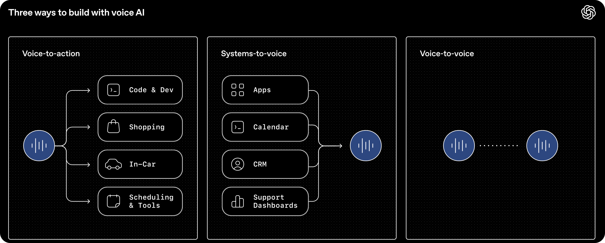
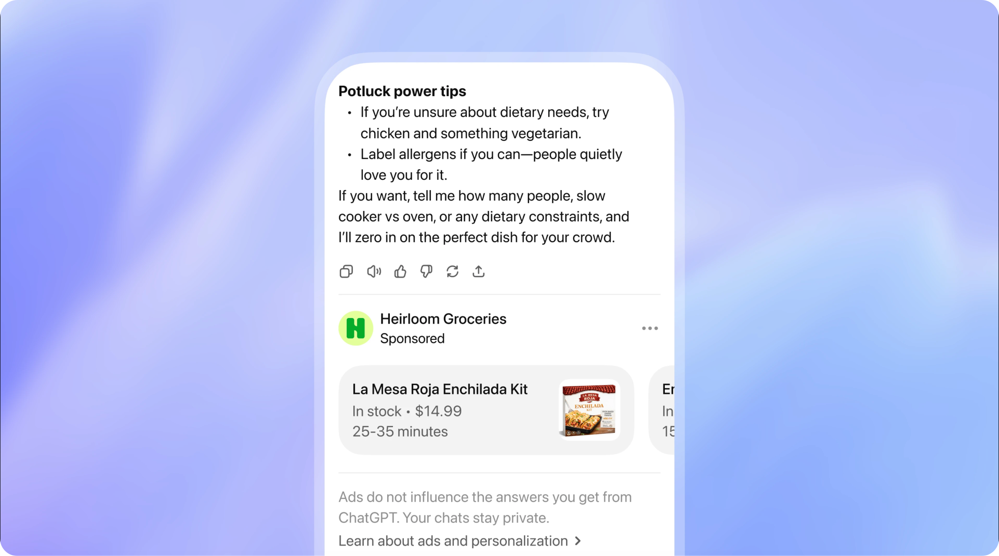

SuuJiKat AI Daily
OpenAI 把 AI 推向实时世界，GPT-5.5-Cyber 开始进入关键系统
2026-05-08 · 过去 24 小时 AIGC 大事件，每天更新
今天这期可以看一个共同信号：
AI 正在从“会回答”走向“能实时参与、能进入高风险场景、也能改变商业模式”。
今日目录
🎙️ OpenAI 发布新一代实时语音模型：能推理、翻译、转写
🧾 OpenAI 扩大 ChatGPT 广告试点：免费层商业化继续推进
🛡️ OpenAI 向关键基础设施防御者开放 GPT-5.5-Cyber 预览
🚀 Anthropic 与 xAI / SpaceX 算力合作继续发酵
🧠 Anthropic 联合创始人 Jack Clark：2028 年前模型训练继任者概率超过 60%
🔎 今天的一个判断：AI 的下一阶段，不是把答案写得更漂亮，而是进入实时世界和关键系统
01｜OpenAI 发布新一代实时语音模型：能推理、翻译、转写
发生了什么
OpenAI 在 5 月 7 日发布了三款新的 API 音频模型：
· GPT-Realtime-2：带 GPT-5 级推理能力的实时语音模型。
· GPT-Realtime-Translate：实时语音翻译模型，支持 70+ 输入语言和 13 种输出语言。
· GPT-Realtime-Whisper：低延迟流式语音转文本模型。
OpenAI 把这组模型描述为从简单“听一句、答一句”走向更完整的实时语音工作流：听、理解、推理、调用工具、翻译、转写，并在对话进行中继续行动。
官方还提到，GPT-Realtime-2 支持并行工具调用、更长上下文、可调 reasoning effort，以及更自然的语气控制。

SuuJiKat 判断
语音 AI 的重点不再只是“像真人说话”。
真正的变化是：语音开始变成工作入口。
当一个语音 agent 能一边听、一边理解上下文、一边调用工具，它就不只是客服机器人，而更像一个实时协作者。
这对 Harmony 工作流也有启发：未来很多工作流不一定从文字 prompt 开始，而可能从一句自然语言、一个电话、一段会议或一场直播开始。
来源
OpenAI - Advancing voice intelligence with new models in the API
02｜OpenAI 扩大 ChatGPT 广告试点：免费层商业化继续推进
发生了什么
OpenAI 在 5 月 7 日更新了 ChatGPT 广告试点说明。
接下来几周，OpenAI 计划把 ChatGPT 广告试点扩展到英国、墨西哥、巴西、日本和韩国。
OpenAI 仍然强调几条原则：
· 广告不会影响 ChatGPT 的回答。
· 对话内容不会直接交给广告主。
· 广告会有明确标识。
· 用户需要保留一定控制权。
此前广告试点主要面向美国、加拿大、澳大利亚和新西兰等市场。

SuuJiKat 判断
ChatGPT 广告不是一个小功能，而是一个商业模式信号。
如果 AI 要服务数亿免费用户，最终总要回答一个问题：算力谁来付钱？
订阅是一条路，企业服务是一条路，广告也是一条路。
但 AI 广告比搜索广告更敏感，因为用户不是在看网页，而是在和一个会记住上下文的系统对话。接下来最值得看的不是“有没有广告”，而是广告会不会影响信任感。
来源
03｜OpenAI 向关键基础设施防御者开放 GPT-5.5-Cyber 预览
发生了什么
Axios 报道，OpenAI 正在向经过审核的网络安全防御者开放 GPT-5.5-Cyber 的 limited preview。
这类用户主要是负责保护关键基础设施的组织。报道提到，GPT-5.5-Cyber 面向防御场景，可以帮助安全团队为发现的漏洞编写 proof of concept，或者运行模拟来测试组织安全状态。
这件事的背景是：前沿模型在发现和利用软件漏洞方面越来越强，OpenAI 和 Anthropic 都在尝试用“可信访问”方式，把强 cyber 能力开放给防御者，同时限制恶意使用。
SuuJiKat 判断
AI 安全能力正在进入一个很微妙的阶段。
同一种能力，可以帮助防御者修漏洞，也可以帮助攻击者找入口。
所以问题不只是“模型强不强”，而是：谁能用、在什么边界里用、使用过程能不能被审计。
这和最近几天的主线是连续的：AI 要进入真实工作流，就必须接受权限、身份、日志和责任约束。
来源
Axios - OpenAI makes its Mythos rival more widely available to cyber defenders
04｜Anthropic 与 xAI / SpaceX 算力合作继续发酵
发生了什么
Anthropic 与 xAI / SpaceX 的算力合作，在 5 月 6 日宣布后继续发酵。
Axios 5 月 7 日继续报道这笔交易的背景：对 Anthropic 来说，额外算力可以缓解 Claude 需求增长带来的容量压力；对 xAI / SpaceX 来说，出售闲置或错峰算力，也可能让其数据中心能力变成一种新业务。
这笔合作有趣的地方在于：马斯克与 OpenAI 关系紧张，而 Anthropic 又是 OpenAI 的重要竞争对手。但在算力这件事上，商业逻辑可以压过阵营叙事。
SuuJiKat 判断
模型竞争的背后，是推理容量竞争。
用户看到的是“Claude 限制有没有变高”，公司看到的是“GPU、数据中心、功耗、推理成本能不能撑住”。
AI 越进入 agent 和长任务，算力就越不像后台成本，而更像产品体验本身。
来源
Axios - How Elon grew to love Anthropic
05｜Anthropic 联合创始人 Jack Clark：2028 年前模型训练继任者概率超过 60%
发生了什么
Axios 报道，Anthropic 联合创始人 Jack Clark 本周表示，他认为到 2028 年底之前，出现一个能完整训练其后继模型的 AI 系统，概率超过 60%。
这是一个非常激进的判断。
它讨论的不是普通自动化，而是 AI 进入 AI 研发本身：让模型参与训练、改进甚至生成下一代模型。
SuuJiKat 判断
这类预测不一定要当成确定事实，但值得当成行业心理信号。
当顶级 AI 公司内部的人开始认真讨论“模型训练继任者”，说明前沿实验室对能力进展的想象已经不只是应用层，而是研发循环本身。
对普通创作者来说，可能没必要跟着喊 AGI 或爆炸。但可以记住一个更具体的问题：如果 AI 开始参与生产下一代 AI，那么人的角色会更多转向提出目标、设定边界、验证结果。
来源
今天的一个判断
今天这些新闻放在一起看，主线不是“又有几个 AI 产品更新”。
AI 正在离开纯文本问答，进入实时世界和高风险系统。
OpenAI 的实时语音模型，让 AI 能在对话发生时理解、翻译、转写、调用工具。
ChatGPT 广告试点扩张，说明 AI 的免费入口开始更认真地商业化。
GPT-5.5-Cyber 进入关键基础设施防御场景，说明前沿能力必须配套可信访问。
Anthropic 和 xAI 的算力合作，说明模型体验越来越依赖推理容量。
Jack Clark 的判断，则把问题推到更远：如果 AI 开始参与训练下一代 AI，人类还要负责什么？
今天可以写的核心不是“AI 又变强了”，而是：
AI 下一阶段的竞争，是谁能进入实时场景、关键系统和自我改进循环，同时还能保留信任、边界和人的判断。
SuuJiKat AI Daily｜AIGC 见闻、AI 使用心得与 Harmony 工作流记录。